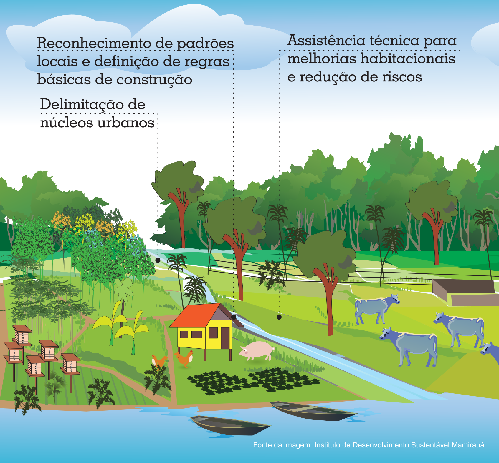

Presença do Setor Público nos Distritos
Objetivos da Estratégia
I – Criar mecanismos para melhor compreensão dos processos
de formação dos Distritos e das condições de urbanização
existentes;
II – Viabilizar a positivação de parâmetros construtivos e de
ocupação do solo adequados à realidade de cada Distrito;
III – Melhorar as condições de moradia nos Núcleos Urbanos
dos Distritos.
Iniciativas da Estratégia
I – Monitoramento dos Núcleos Urbanos dos Distritos com
aprimoramento da base de informações de cada núcleo urbano
com vistas a subsidiar planos específicos de uso e ocupação do
solo, quando for o caso, bem como a atuação do Município por
meio dos diferentes setores da administração pública;
II – Assistência técnica para melhorias habitacionais e redução
de riscos com estruturação de componente dirigido aos distritos
no âmbito do Programa Municipal de Assistência Técnica em
Habitação de Interesse Social, destinado à oferta de orientações
aos processos de autoconstrução, bem como para melhorias
habitacionais e redução de riscos associados tanto à localização
das edificações como às condições das construções.
Componentes da Estratégia

Artigos 24 e 25 da Lei Complementar n° 838/2021 - Acesse
aqui